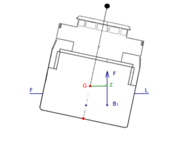

Bras de levier (GZ)
Position des centres de carène et de gravité lorsque le navire est gîté
Lorsque le navire est gîté, on s’aperçoit donc que le centre de gravité G et le centre de carène C ne sont plus sur la même verticale.
Le bras de levier GZ
Le centre de gravité G et le centre de carène C sont espacés horizontalement d'une distance appelée bras de levier GZ.
La distance GZ est appelée bras de levier, car elle a une action sur la stabilité du navire comparable à celle du bras de levier d'un un pied de biche ou d'une clé mécanique.

Fondamental : Couple de redressement
Dans le cas représenté ci dessus, les deux forces n'étant pas sur la même verticale, elles constituent un couple de forces de ayant tendance à faire "tourner" le navire de manière à ce qu'il se redresse.

On parle de couple de redressement.